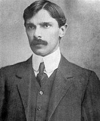
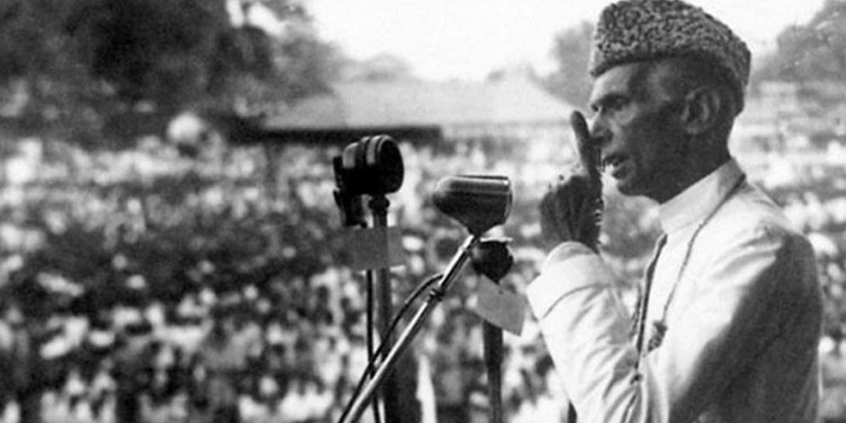

A Tribute To Muhammad Ali Jinnah
Family Background & Early Years
Muhammad Ali Jinnah (born Mahomedali Jinnahbhai; 25 December 1876 – 11 September 1948) was born to jinnahbhai Poonja and his wife Mithibai, in a rented apartment on the second floor of Wazir Mansion near Karachi,now in Sindh, Pakistan but then within the Bombay Presidency of British India.Jinnah was from a wealthy merchant background, his father was a merchant and was born to a family of textile weavers in the village of Paneli in the princely state of Gondal (Kathiawar, Gujarat).
As a boy, Jinnah lived for a time in Bombay with an aunt and may have attended the Gokal Das Tej Primary School there, later on studying at the Cathedral and John Connon School. In Karachi, he attended the Sindh-Madrasa-tul-Islam and the Christian Missionary Society High School.[17][18][19] He gained his matriculation from Bombay University at the high school.In 1892, Sir Frederick Leigh Croft, a business associate of Jinnahbhai Poonja, offered young Jinnah a London apprenticeship with his firm, Graham's Shipping and Trading Company.[21] He accepted the position despite the opposition of his mother, who before he left, had him enter an arranged marriage with his cousin, two years his junior from the ancestral village of Paneli, Emibai Jinnah. Jinnah's mother and first wife both died during his absence in England.Soon after his arrival in London, Jinnah gave up the business apprenticeship in order to study law, enraging his father, who had, before his departure, given him enough money to live for three years. The aspiring barrister joined Lincoln's Inn, later stating that the reason he chose Lincoln's over the other Inns of Court was that over the main entrance to Lincoln's Inn were the names of the world's great lawgivers, including Muhammad(pbuh).
Legal and early political career
 At the age of 20, Jinnah began his practice in Bombay, the only Muslim barrister in the city.[11] English had become his principal language and would remain so throughout his life. His first three years in the law, from 1897 to 1900, brought him few briefs. His first step towards a brighter career occurred when the acting Advocate General of Bombay, John Molesworth MacPherson, invited Jinnah to work from his chambers.[36][37] In 1900, P. H. Dastoor, a Bombay presidency magistrate, left the post temporarily and Jinnah succeeded in getting the interim position. After his six-month appointment period, Jinnah was offered a permanent position on a 1,500 rupee per month salary. Jinnah politely declined the offer, stating that he planned to earn 1,500 rupees a day—a huge sum at that time—which he eventually did.
At the age of 20, Jinnah began his practice in Bombay, the only Muslim barrister in the city.[11] English had become his principal language and would remain so throughout his life. His first three years in the law, from 1897 to 1900, brought him few briefs. His first step towards a brighter career occurred when the acting Advocate General of Bombay, John Molesworth MacPherson, invited Jinnah to work from his chambers.[36][37] In 1900, P. H. Dastoor, a Bombay presidency magistrate, left the post temporarily and Jinnah succeeded in getting the interim position. After his six-month appointment period, Jinnah was offered a permanent position on a 1,500 rupee per month salary. Jinnah politely declined the offer, stating that he planned to earn 1,500 rupees a day—a huge sum at that time—which he eventually did.
As a lawyer, Jinnah gained fame for his skilled handling of the 1908 "Caucus Case". This controversy arose out of Bombay municipal elections, which Indians alleged were rigged by a "caucus" of Europeans to keep Sir Pherozeshah Mehta out of the council.[40] Jinnah gained great esteem from leading the case for Sir Pherozeshah, himself a noted barrister. Although Jinnah did not win the Caucus Case, he posted a successful record, becoming well known for his advocacy and legal logic.
One of Jinnah's fellow barristers from the Bombay High Court remembered that "Jinnah's faith in himself was incredible"; he recalled that on being admonished by a judge with "Mr. Jinnah, remember that you are not addressing a third-class magistrate", Jinnah shot back, "My Lord, allow me to warn you that you are not addressing a third-class pleader."[44] Another of his fellow barristers described him, saying:
“He was what God made him, a great pleader. He had a sixth sense: he could see around corners. That is where his talents lay ... he was a very clear thinker ... But he drove his points home—points chosen with exquisite selection—slow delivery, word by word. ”
Rising Leader

Jinnah devoted much of his time to his law practice in the early 1900s, but remained politically involved. Jinnah began political life by attending the Congress's twentieth annual meeting, in Bombay in December 1904.[51] He was a member of the moderate group in the Congress, favouring Hindu–Muslim unity in achieving self-government, and following such leaders as Mehta, Naoroji, and Gopal Krishna Gokhale.[52] They were opposed by leaders such as Tilak and Lala Lajpat Rai, who sought quick action towards independence.
Although Jinnah initially opposed separate electorates for Muslims, he used this means to gain his first elective office in 1909, as Bombay's Muslim representative on the Imperial Legislative Council. He was a compromise candidate when two older, better-known Muslims who were seeking the post deadlocked. The council, which had been expanded to 60 members as part of reforms enacted by Minto, recommended legislation to the Viceroy. Only officials could vote in the council; non-official members, such as Jinnah, had no vote. Throughout his legal career, Jinnah practised probate law (with many clients from India's nobility), and in 1911 introduced the Wakf Validation Act to place Muslim religious trusts on a sound legal footing under British Indian law.
In December 1912, Jinnah addressed the annual meeting of the Muslim League although he was not yet a member. He joined the following year, although he remained a member of the Congress as well and stressed that League membership took second priority to the "greater national cause" of an independent India. In April 1913, he again went to Britain, with Gokhale, to meet with officials on behalf of the Congress. Gokhale, a Hindu, later stated that Jinnah "has true stuff in him, and that freedom from all sectarian prejudice which will make him the best ambassador of Hindu–Muslim Unity".[60] Jinnah led another delegation of the Congress to London in 1914, but due to the start of the First World War found officials little interested in Indian reforms. By coincidence, he was in Britain at the same time as a man who would become a great political rival of his, Mohandas Gandhi, a Hindu lawyer who had become well known for advocating satyagraha, non-violent non-co-operation, while in South Africa. Jinnah attended a reception for Gandhi, and returned home to India in January 1915.